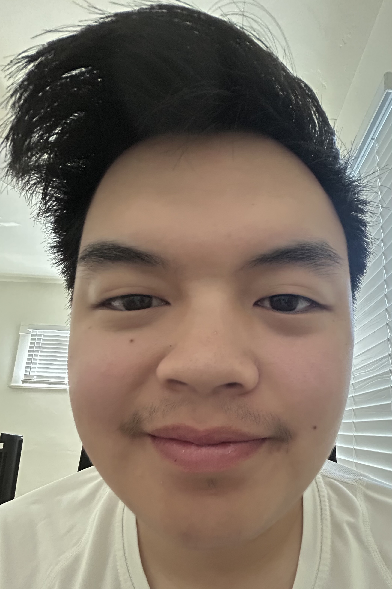
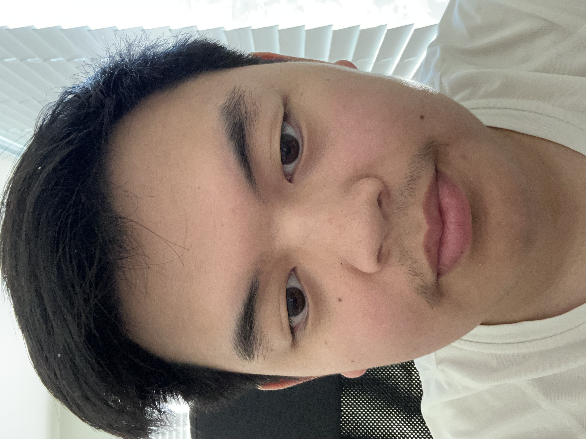
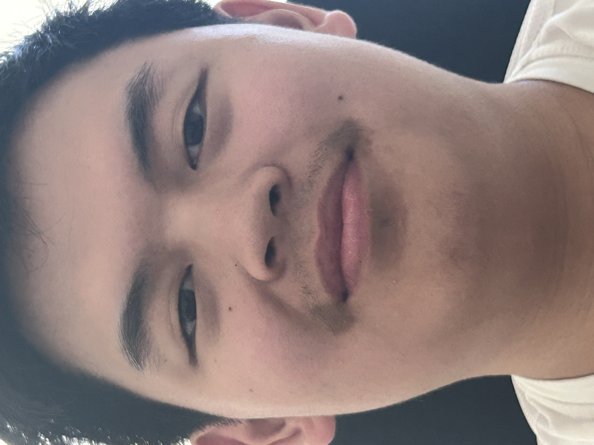
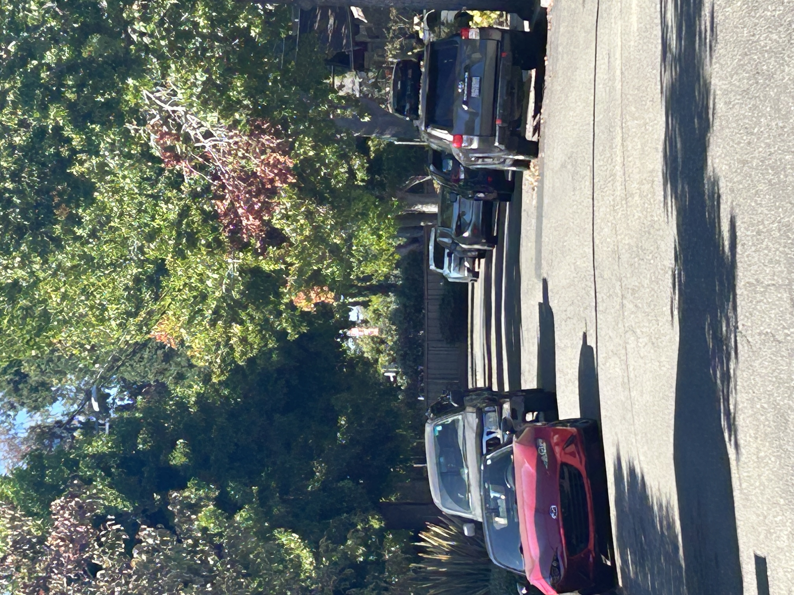

Three selfies, taken at increasingly further distances and greater zooms. As we step back, notice that the geometric distortion of the faces decreases.

Close, wide-angle selfie. Very noticable distortion, with larger central nose and a receding background.

Typical selfie Less exaggerated proportions.

Zoomed in selfie. Almost no distortion, face is noticeably flatter than before.
Part 2 — Architectural Perspective Compression
Street photographed at two different zooms and distances.

Far distance + more zoom. The distance between cars and objects is small relative to distance from the camera, so the scene feels compressed.Small distance + no zoom. "Depth" is more visible and apparant at a shorter distance.
Why the first looks flatter: When you shoot from farther away, the relative size change between near and far objects shrinks (their rays strike the sensor at closer angles). Zoom doesn’t cause compression by itself; it allows similar framing from a longer distance, which is what reduces the relative perspective differences.
Part 3 — The Dolly Zoom (“Vertigo Shot”)
A dolly zoom, with successive pictures being further from the scene while zooming in.